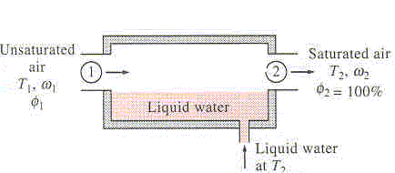

ADIABATIC SATURATION PROCESS

In an adiabatic saturation process, dry air + water vapor enters a long insulated channel at P (kPa) and T°C and leaves at Tsaturation°C, which also is the saturation temperature. Determine the absolute and relative humidity of mixture at the enterance of channel.